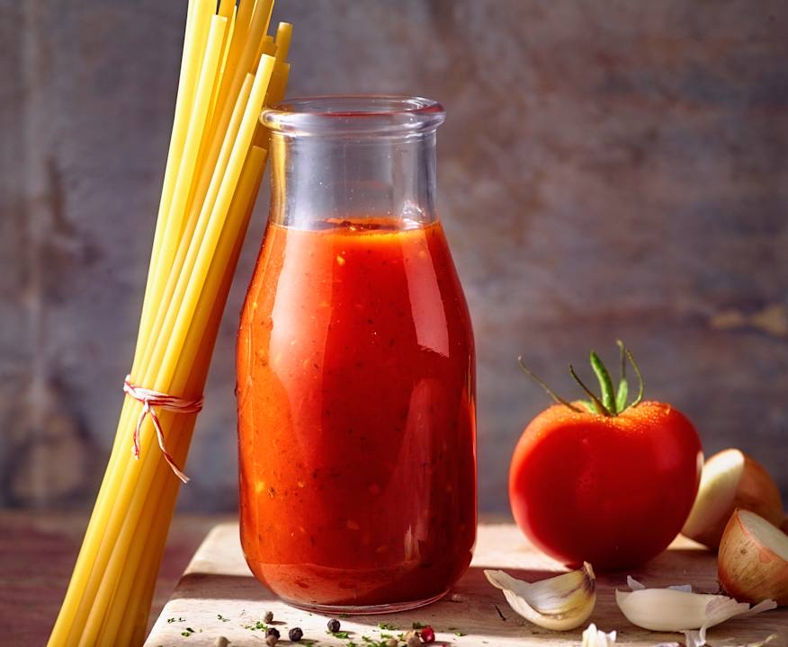

Tomatensauce
Von
Cookidoo
Portionen:
1 Portion (ca. 300 g)
Zubereitungszeit:
25 Minuten
Zutaten
1 Knoblauchzehe
½ Zwiebel
2 TL Olivenöl
250 g Tomaten, geviertelt
1 TL Pizzagewürz
¾ TL Gewürzpaste für Gemüsebrühe, selbst gemacht
1 Prise Salz
1 Prise Pfeffer
¼ TL Balsamico, dunkel
1 Prise Zucker
1 EL Tomatenmark
1 EL Crème fraîche
Zubereitung
Zwiebel und Knoblauch schälen, im Mixtopf 3 Sek./Stufe 5 hacken und vom Rand nach unten schieben.
Das Olivenöl dazugeben und 3 Min./120°C/Stufe 1 andünsten.
250 g Tomatenviertel in den Mixtopf wiegen.
8 Sek./Stufe 5 klein hacken.
Pizzagewürz, Gewürzpaste, Salz, Pfeffer, Balsamico, Zucker und Tomatenmark dazugeben. Statt des Messbechers den Gareinsatz als Spritzschutz auf den Deckel setzen. Die Sauce 12 Min./100°C/Stufe 2 im Mixtopf einkochen lassen.
Crème fraîche dazugeben und 15 Sek./Stufe 3 unterrühren. Passt zu Nudeln oder Reis. Wer mag, gibt Oliven, Kapern, Thunfisch oder Schinken dazu.
Bring! Einkaufsliste App für iPhone und Android